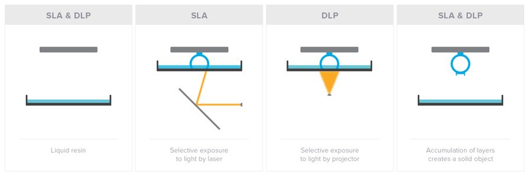

3d Printing
3d Printing
3d Printing
3d Printing
3d Printing
3D printing, also known as additive manufacturing(am), refers to processes used to create a three-dimensional object in which layers of material are formed under computer control to create a physical object.
Objects can be
of almost any shape or geometry and are produced using digital model data from a 3D model
3D printing is achieved using an additive process, where succesive layers of material are laid down in different shapes.


-
3D Printing has been around for decades
- It was invented by Chuck Hull who created the first 3D printer protoype in 1994
- He named the technique Stereo Lithography and patented it in 1986
- Hull's original design used a UV laser to cure layers of UV sensitive resin
- By the end of the 1980s similar (AM)technologies such as Fused Deposition Modeling(FDM) and Selective laser Sintering(SLS) were introduced. (More on these later)


The price range of these printers was hundred of thousands of dollars.


Fused Deposition Modeling(FDM)

Stereolithography (SLA) and Digital Light Projection(DLP)
3D modeling is the process of creating a 3D representation of any surface or object by manipulating polygons, edges, and vertices in simulated 3D space.
- 3d Printable Models may be created with a computer aided design program or via a 3d scanner
- The manual modeling process of preparing geometric data is analogous to scultpting
- 3D scanning is a proecss of analyzing and collecting the data of a real object; it's shape and appearance and builds digital, three dimensional models
- There is a huge variety of 3D CAD software on the market with a variety of features
- The native file formats of these programs are propietary
- Collecting these files would be useful for the informaton that they contain, but also a challenge to open